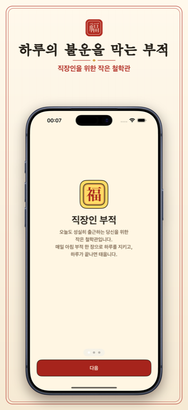
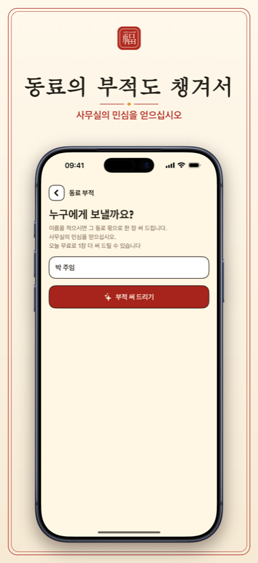

매일 아침 출근길, 직장 생활에 지친 직장인을 위해 — 능청맞은 철학관 도사가 오늘의 회사 운을 살펴 회의·보고·결재, 가장 약한 곳을 채워 줄 사자성어 부적을 써 행운을 빌어 드립니다. 사무실의 하루에 웃음 한 줌.
광고 없음 · 계정 없음 · 모든 부적은 기기 안에만.
오늘의 총운 · 소길 小吉 · ★★★☆☆
만사형통 · 萬事亨通
「오늘 회사 일, 무엇을 하든 술술 풀리시라. 결재도, 회의도, 그리고 칼퇴도.」
회의·보고·상사와의 관계, 그리고 월급날까지 — 소통·문서·마음·재물 네 갈래로 오늘의 직장 생활 운을 살핍니다. 별점으로 한눈에 보고, 가장 약한 곳을 채워 오늘의 행운을 빌어 드립니다.
소통운
★★★★★
회의도 상사와의 대화도 무난.
문서운
★★★★★
결재·보고서, 한 번에 통과.
마음운
★★★★★
야근·회식에도 평정심을.
재물운
★★★★★
월급은 아직인데 지갑은 얇은 날.
처방그날 회사 생활에서 가장 약한 운에 맞춰 사자성어 부적이 처방됩니다. 萬事亨通, 大吉運數처럼 넉 자가 부적 도상에 또렷이 새겨집니다.
출근길에 받은 부적이 영 아니다 싶으면, 태우고 다시 뽑을 수 있습니다. 퇴근하고 하루가 끝나면 부적은 조용히 사라집니다.
같은 사무실 동료의 이름을 적으면 그 몫으로 부적을 써 줍니다. 사무실의 민심은, 이런 데서 납니다.
완성된 부적을 이미지로 저장·공유하고, 지닌 부적을 홈 화면 위젯으로 모실 수 있습니다.




매일 아침 출근길, 직장인 부적 한 장.
App Store · 곧 출시